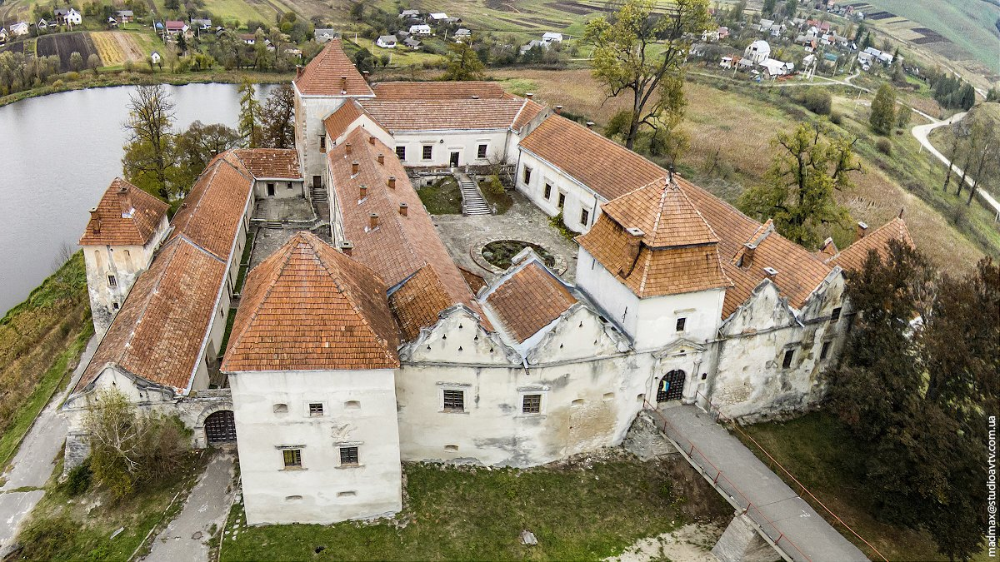
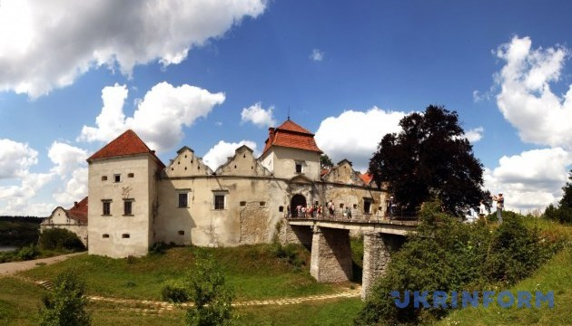
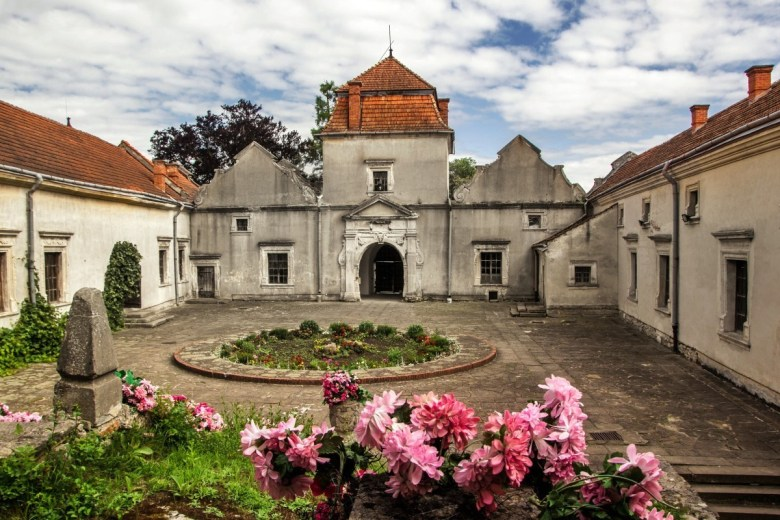
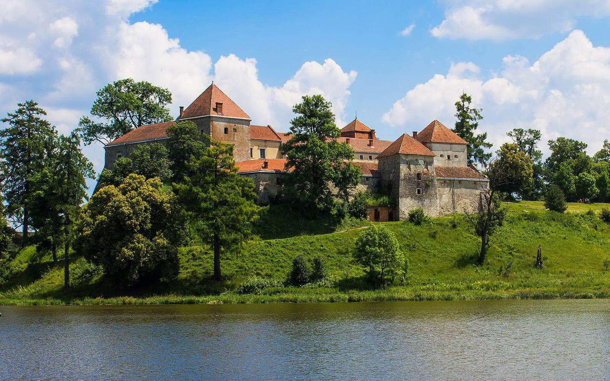

Свіржський замок

Історія
Закладений у XV столітті Андрієм і Мартином Свірзькими, вперше згадується у 1484 році. Первинно замок був суто оборонною мурованою спорудою, квадратною в плані. Неодноразово перебудовувався; рік завершення одного з етапів робіт вказано безпосередньо на стінах — над центральною брамою з внутрішньої сторони збереглося вирізьблене число «1530».
Новітня історія
Подальша доля замкового комплексу вирішилася в 1970-ті роки. На позитивному прикладі замків Золотої Підкови можна тільки уявити собі популярність Свірзької перлини в якості музею-заповідника з цікавою експозицією, якби б він перейшов свого часу у відомство Львівської картинної галереї. Однак, замку було уготоване інше призначення – служити Будинком творчості архітекторів. На жаль, довгі роки реставрації та перебудови видатної історичної пам’ятки так і не увінчались відкриттям творчого осередку. Із припиненням фінансування життя в замку зупинилось остаточно, та довгі роки замкова брама лишалася безнадійно закритою для туристів. В останній час піднімалось питання концесії споруди, проте чудовий туристичний об’єкт і надалі продовжує перебувати в стані летаргійного сну.
Цікаві факти та легенди
- Завдяки своєму непідробному французькому шарму, Свірзький замок послужив вдалою декорацією у відомій радянській епопеї про трьох мушкетерів, відігравши водночас декілька ролей. Складно здогадатися, що і Бетюнський монастир, де загинула Констанція, і місце проживання ката, який стратив Міледі, і архітектурний пейзаж Гасконі – це все різні вирази одного обличчя. Майже зруйнована старовинна вежа неподалік замку отримала роль фортеці в Ла-Рошелі, та навіть мальовнича місцева галявина була задіяна під час зйомок в якості французької пасторалі.
- А який замок без моторошних легенд? Є така і в Свіржі. Пліткарі переповідають сумну історію кохання наївної місцевої дівчини, яка працювала в замку, до підступного військового-загарбника. Відкривши ворота замку ворожому війську, дівчина поплатилася за це життям, знайшовши свою загибель в глибинах замкового колодязю. Правда чи вигадка, сьогодні вже не розсудити, проте на романтично налаштованих туристів ця історія в доповненні з демонстрацією занедбаного, проте реально існуючого замкового колодязя на господарському дворі, справляє незабутнє враження.
- І який замок без скарбів? Після Другої світової війни в оборонному рові під підйомним мостом було відкрито підземний хід з майном останніх власників замку, щоправда без золота-діамантів, проте знайдені меблі та побутові речі швидко знайшли своїх нових власників.
Фотографії
|  |  |  |  |